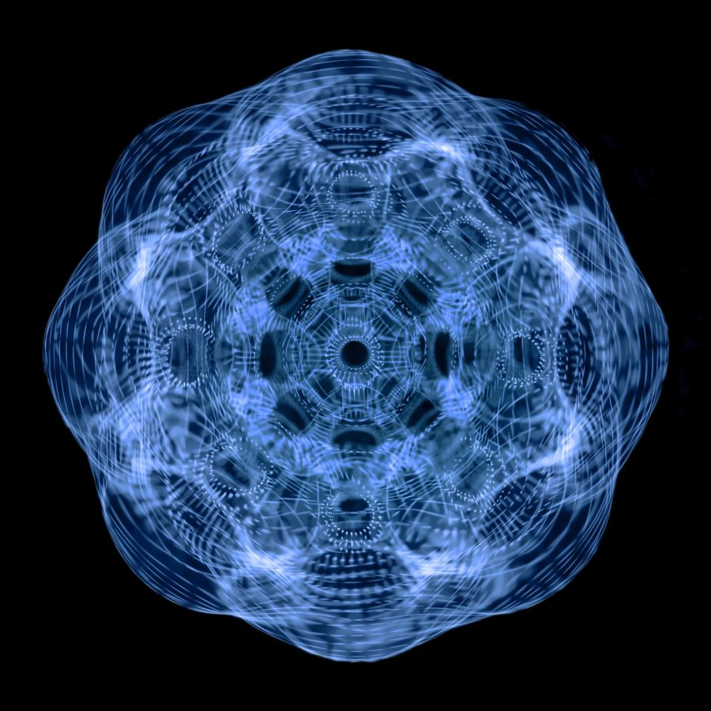

Description
Due to an inability to be photographed or documented by both film and digital cameras, the spheres can only be seen physically, and thus only visual descriptions can be provided. The spheres are roughly the size of volleyballs, ranging from 7 to 9 inches in diameter, and weighing about 8-10 pounds. The sphere's outer shell is dark gray and smooth to the touch, with strange patterning across its surface. Multiple tests to determine the sphere's material makeup have been dubbed inconclusive, ranging in a variety of results including tungsten, titanium, uranium, iron, and even gold. Some who have touched a sphere have reported a vibrating sensation, or warm heat, emanating around the outside of the sphere. A few conspiracy theorists believe it could be a sort of magnetic field, which is responsible for the glitchy anomaly the spheres cause in cameras and audio equipment. Despite the use of heavy duty industrial equipment, including drills, laser cutters, and hydraulic presses, no sphere has been broken into or cracked, so the interior quality of the sphere is unknown.

Drawing by CTSP Detective Robert Sears (1962)

Origins
In every documented instance, the spheres are found in outdoor spaces, usually parks, parking lots, woods, and general natural environments. Many claim the spheres fall from the sky, as according to one witness testimony where a woman was admitted to the hospital after receiving large blunt-force trauma to the head. However, no other evidence suggests these objects come from the sky, as they make no sound upon impact, nor leave any trace evidence or impact marks in the ground; they simply appear from thin air. As of today, 23 spheres have been found within Hoggestown, CT over a period of 80 years. All are accounted for and within police and/or local government custody, save for one (no one knows where this missing sphere went, or where it is today, as no one has yet to step forward and claim ownership of the missing sphere).